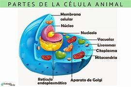

CÉLULA ANIMAL

Las principales partes de la célula animal son: núcleo, membrana plasmática, citoplasma, retículo endoplasmático, aparato de Golgi, centrosoma, cilios y flagelos, mitocondrias y citoesqueleto. Las células animales se pueden considerar como ladrillos en un edificio. La unión de muchas de ellas pueden formar estructuras mayores, como tejidos en los organismos pluricelulares, o ser la única estructura funcional de un ser vivo en los organismos unicelulares.
Tipos
Existe una variedad amplia de células de los animales, pero ¿sabías que en el cuerpo humano existen más de 200 clases distintas? A continuación, describimos los tipos de células animales y sus funciones más característicos, aunque no están presentes en todos los animales.
- Células epiteliales: normalmente son las células que están presentes en las paredes de los órganos, formando los tejidos de recubrimiento.
- Células nerviosas: dos tipos de células forman el tejido nervioso: las neuronas y las células de la glía.
- Células musculares: existen tres tipos principales de células musculares: las del tejido muscular liso, esquelético y cardíaco.
- Células sanguíneas: existen diferentes tres tipos de células sanguíneas: los glóbulos rojos (o eritrocitos), los glóbulos blancos (o leucocitos) y las plaquetas.
- Células adiposas: son los adipocitos, células de gran tamaño y cuya función es la de almacenar energía en forma de ácidos grasos en su interior, de secreción de proteínas y hormonas y función de protección térmica y mecánica.
- Células cartilaginosas: se denominan condrocitos y tienen forma aplanada y redondeada y presencia de microvellosidades. En el cuerpo humanos, estas células están presentes en tejidos que se encuentran en las costillas, articulaciones, nariz… y en conjunto tienen una función de soporte.
- Óseas: son las encargadas del crecimiento del hueso y de su degradación. Existen tres tipos: los osteoblastos, osteoclastos y osteocitos.
Partes de la célula animal:
- Núcleo
- Membrana plasmática
- Citoplasma
- Retículo endoplasmático
- Aparato de Golgi
- Centrosoma
- Cilios y flagelos
- Mitocondrias
- Citoesqueleto